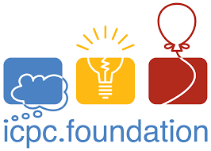
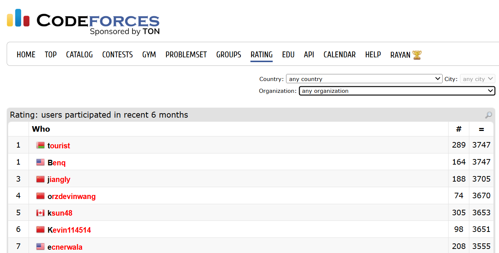
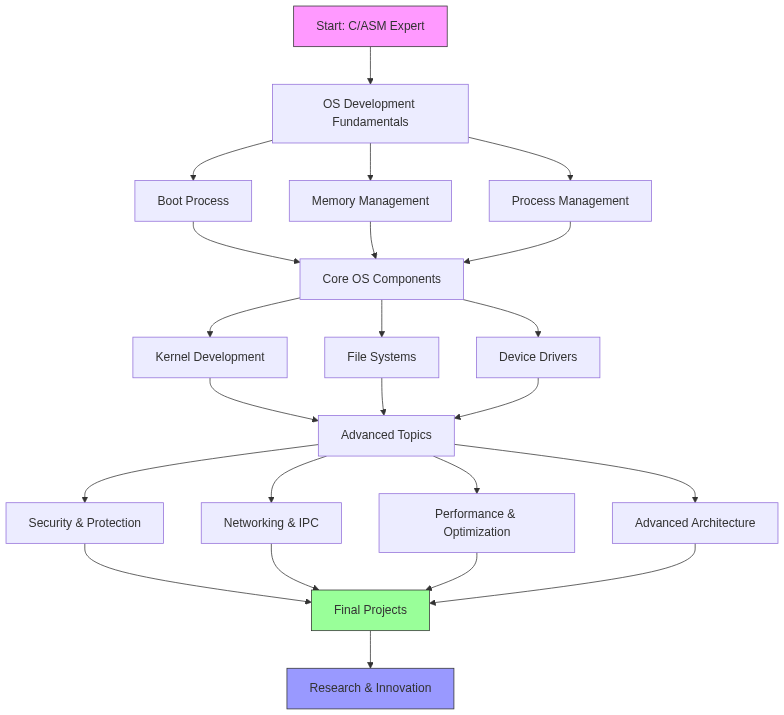

My future aspirations focus on the 3 things I love: competing in programming tournaments, climbing online leaderboards and learning about operating systems.

Ever since discovering Competitive Programming 3 years ago, I've always dreamt of one day competing at the national or international level - competitions like ICPC World Finals or IOI (International Olympiad for Informatics)
Comment: I will be participating in ICPC Vietnam National 2025 literally a day after this assignment's deadline, so good luck to me, I guess
🗣️🗣️🗣️

I spend much of my practice time on online platforms such as Codeforces, VNOJ and CSES. Leaderboards give me a clear sense of progress and motivation - they turn regular practice into measurable milestones. Contests validate what I've learned, but my leaderboard rank reflects more on the consistent journey of improvement over time.

While I began my studies at UTS with a general focus on Software Development, I plan to deepen my knowledge deeper into the computer, into the operating system that runs the softwares themselves.
My reasoning for pursuing such a field is to contribute to open-source OS projects, namely the Linux kernel.